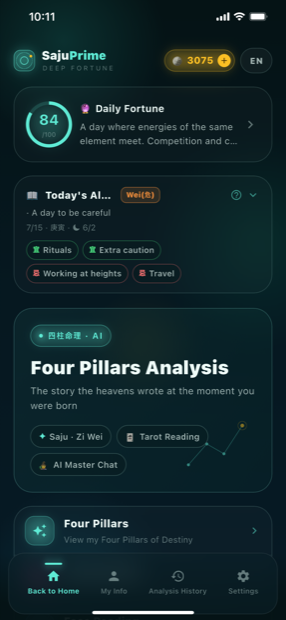
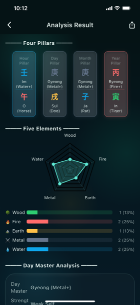
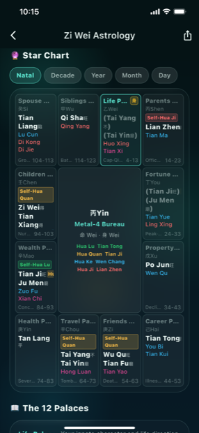
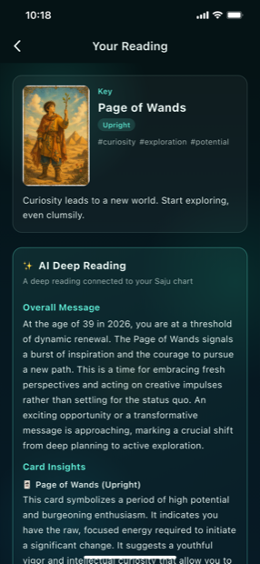
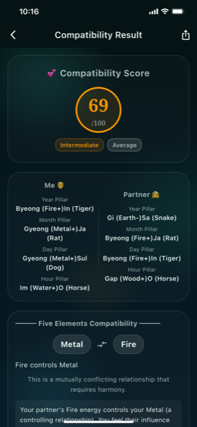
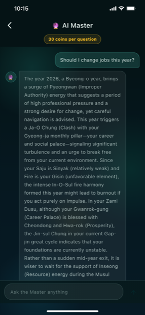

SajuPrime
The story the heavens wrote at the moment you were born.
Read your Four Pillars, Zi Wei chart, compatibility and tarot from a single birth date — and ask the AI Master.
The story the heavens wrote at the moment you were born.
Read your Four Pillars, Zi Wei chart, compatibility and tarot from a single birth date — and ask the AI Master.
SajuPrime brings the essence of East Asian destiny studies into one app. Enter your birth date and time and it builds your Four Pillars (Saju), then automatically calculates your Five-Element balance, the strength of your Day Master, and your Yong Shin (favorable element) — so you can see the balance of energy you were born with at a glance. You don't need to read a traditional almanac to understand the story written the moment you were born.
It goes far beyond a single reading. A Zi Wei Dou Shu star chart maps your life across the Twelve Palaces, a compatibility view compares two charts with a score and Five-Element relationships, and a tarot draw speaks to today's question. Tarot and fortune readings aren't just generic card meanings — they are woven together with your own Saju (Day Master and Yong Shin) through an AI Deep Reading that points to the message you need right now.
Each morning you can check your daily fortune score and the auspicious/inauspicious guidance, and whenever something is on your mind you can ask the AI Master directly. SajuPrime supports English, 한국어, 日本語 and 中文, and is currently under App Store review. We'll add the download links here as soon as it goes live.
Saju, Zi Wei, compatibility, tarot and AI chat — all in one app
Builds your year, month, day and hour pillars and analyzes your Five-Element distribution, Day Master strength and Yong Shin — the balance of your innate energy.
See the major and supporting stars and the Four Transformations across the Twelve Palaces, and switch between natal, decade, annual, monthly and daily charts.
Compares two charts side by side for a 0–100 compatibility score, the generating/controlling Five-Element relationship and what to watch for in the relationship.
Draw upright or reversed cards and get an AI Deep Reading connected to your Saju (Day Master and Yong Shin), with an overall message and per-card insights.
Ask questions like "Should I change jobs this year?" and the Master answers with tailored advice grounded in your Saju, Zi Wei chart and annual cycle.
Check your daily fortune score and the auspicious/inauspicious guidance — what to do and what to avoid today — right on the home screen.
Save your results as an image or PDF to share, and revisit past analyses anytime from your history.
Supports English, 한국어, 日本語 and 中文, with in-app language switching.
A mystical deep-aurora interface

Home

Four Pillars

Zi Wei

Compatibility
Just enter your birth date and time and your Four Pillars are built for you, with Wood, Fire, Earth, Metal and Water shown on a radar chart. Alongside your Day Master strength, your Yong Shin and helpful element are derived so you can see what is abundant and what is lacking.
Centered on your Life Palace, the chart shows the stars and Four Transformations placed across the Twelve Palaces — siblings, spouse, wealth, career, fortune and more. Switch between natal, decade, annual, monthly and daily views to follow the flow of each period.
Draw a card and see the core card's orientation and keywords, then an AI Deep Reading that combines it with your Saju (Day Master and Yong Shin). You get an overall message plus per-card interpretation for the advice you need now.

Ask about work, love, wealth or health in your own words. The Master reads your situation from your Saju, Zi Wei chart and this year's cycle, and offers tailored guidance on timing and direction.

Answers to common questions about SajuPrime
Enter your birth date and time and it analyzes your Four Pillars, Five-Element distribution, Day Master strength and Yong Shin. It also offers a Zi Wei Dou Shu chart, compatibility between two people, tarot readings, a daily fortune, and an AI Master chat — all in one app.
SajuPrime's tarot doesn't stop at card meanings — it provides an AI Deep Reading that combines the cards with your Saju (Day Master and Yong Shin). So even the same card yields an overall message and per-card interpretation tuned to your energy.
SajuPrime supports English, 한국어, 日本語 and 中文, with in-app language switching.
SajuPrime is a reference app for self-understanding and enjoyment. Its fortunes and advice are for reference only and do not replace professional judgment (medical, legal, financial) or important decisions.
The SajuPrime app is currently under store review. We'll add the App Store and Google Play download links to this page as soon as it goes live.